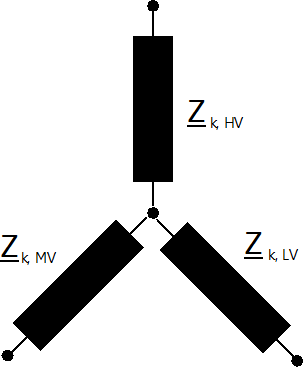

Branch Elements¶
Branches are represented by a single short circuit impedance:

Shunt admittances are neglected for all branch elements.
Line¶
where the correction factor for the short-circuit resistance \(K_L\) is defined as:
The end temperature in degree after a fault has to be defined with the parameter endtemp_degre in the line table.
Two-Winding Transformer¶
The short-circuit impedance is calculated as:
where the correction factor \(K_T\) is defined in the standard as:
where \(c_{max}\) is the voltage correction factor on the low voltage side of the transformer and \(x_T\) is the transformer impedance relative to the rated values of the transformer.
The ratio of the transformer is considered to be the nominal ratio, the tap changer positions are not considered according to the standard.
Three-Winding Transformer¶
Three Winding Transformers are modelled by three two-winding transformers:
{kind=link}
The conversion from one two to three two winding transformer parameter is described here.
For the short-circuit calculation, the loss parameters are neglected and the transformer correction factor is applied for the equivalent two-winding transformers as follows:
Note that the correction factor has to be applied to the transformers before the wye-delta and not on the resulting two-winding transformers.